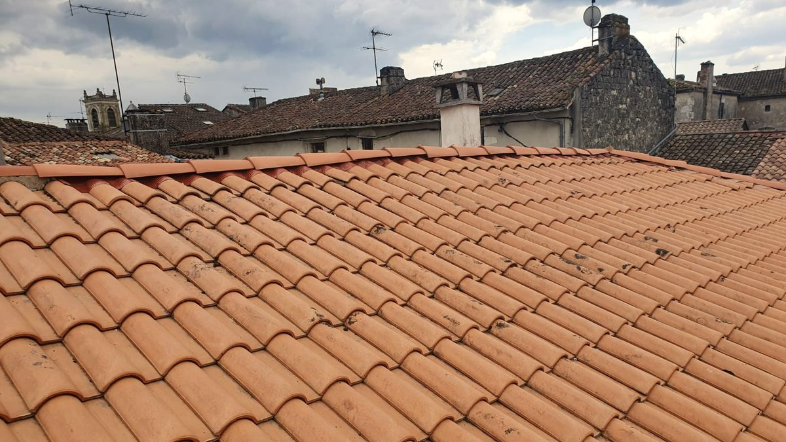
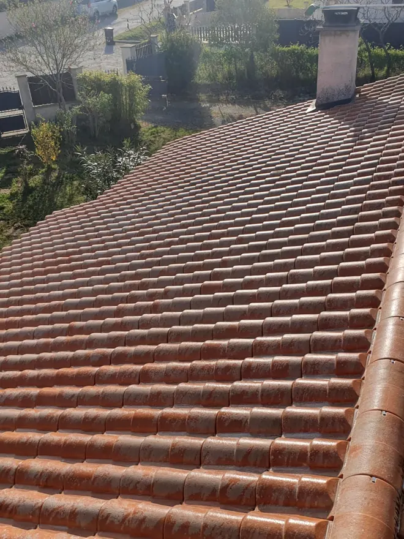

Couvreur · La Réole · Entre-deux-Mers
Couvreur à La Réole, Langon et Marmande
Fuite, tuiles cassées ou déplacées, toiture couverte de mousse, faîtage à reprendre ou couverture à refaire : Peter intervient à 25 km autour de La Réole, du diagnostic sur le toit jusqu’à la fin du chantier.
- Diagnostic sur le toit, pas depuis le sol
- Un seul interlocuteur : l’artisan
- Déplacement et devis gratuits
- 5,0 sur Google
Peter vous rappelle rapidement.
06 78 44 61 09Appelez directement, il répond.
06 78 44 61 09Un toit ne lâche pas d’un coup. Il prévient.
Une tuile déplacée, une tache au plafond, un peu de mortier tombé du faîtage : les signes sont discrets, et le défaut s’agrandit. Avec les orages d’été et les pluies d’hiver, chaque épisode fait gagner du terrain à l’eau.
- La tuile glisse
- Une tuile canal qui a bougé ne recouvre plus sa voisine. La pluie poussée par le vent passe dessous et mouille le bois.
- Le bois prend l’eau
- Un chevron ou un liteau humide en permanence se ramollit et ne porte plus la couverture. La réparation devient une réfection.
- L’isolant ne protège plus
- Une laine mouillée se tasse et ne sèche pas dans des combles fermés. La facture de chauffage suit.
- La facture change d’échelle
- Quelques tuiles à reprendre à l’automne, un pan à refaire au printemps : entre les deux, il n’y a qu’un hiver de pluie.
Un couvreur qui connaît les toits du coin
Entre la Garonne et l’Entre-deux-Mers, les toitures sont surtout en tuile canal et en tuile romane, sur des charpentes souvent anciennes et des pentes faibles. Maisons de bourg à La Réole, longères en pierre, pavillons : le matériau change peu, mais il ne vieillit pas partout de la même façon.
Peter remplace les tuiles cassées, reprend les faîtages et les rives, refait les solins, remplace les bois abîmés et refait la couverture quand le support ne tient plus. Il vous dit franchement ce qui doit être fait, et ce qui peut attendre.
Sur ses chantiers.
Photos prises par Peter sur ses toits, pas dans une banque d’images.



Comment ça se passe.
- 01Vous appelez
Peter vous répond lui-même et qualifie l’urgence au téléphone. Si l’eau coule, il vous donne les gestes à faire tout de suite.
- 02Sécurisation
Si nécessaire, il bâche et met hors d’eau la toiture avant toute chose.
- 03Diagnostic sur le toit
Tuiles, faîtage, rives, solins, zinguerie et bois visibles : tout est contrôlé, photos à l’appui. C’est gratuit.
- 04Travaux + devis
Un devis écrit et détaillé, l’urgent séparé de ce qui peut attendre. Utilisable auprès de votre assurance.
Combien coûtent des travaux de toiture ?
Aucun couvreur sérieux ne peut chiffrer sans avoir vu le toit. Le prix dépend de la surface, de la pente, du type de tuile, de l’état des bois en dessous, de l’accès au toit (échafaudage ou non) et de l’urgence de l’intervention.
Sa méthode : il monte sur le toit, établit un diagnostic, puis un devis détaillé, gratuit et sans engagement. Le déplacement est gratuit lui aussi. Une réparation ciblée n’a rien à voir avec une réfection complète : le diagnostic sert justement à ne pas vous faire payer plus que nécessaire.
Recevoir mon devis gratuitUn artisan proche de chez vous.
Installé à Loubens (33190), à cinq minutes de La Réole, Peter intervient dans un rayon de 25 km : La Réole, Gironde-sur-Dropt, Monségur, Sauveterre-de-Guyenne, Caudrot, Saint-Macaire, Langon, Marmande, Meilhan-sur-Garonne, Duras, Targon, Cadillac, Bazas et toutes les communes alentour, hameaux compris. Le déplacement pour le diagnostic est gratuit.
Questions fréquentes
Le diagnostic et le devis sont-ils vraiment gratuits ?
Oui, les deux, et sans engagement. Rien n’est facturé pour venir voir, monter sur le toit et remettre un chiffrage écrit.
Quels travaux faites-vous ?
Couverture en tuile, réparation de fuite, démoussage et hydrofuge, charpente, zinguerie et gouttières, et aussi nettoyage et peinture de façade.
Qui vient sur le chantier ?
Peter lui-même. Celui qui chiffre est celui qui monte sur le toit.